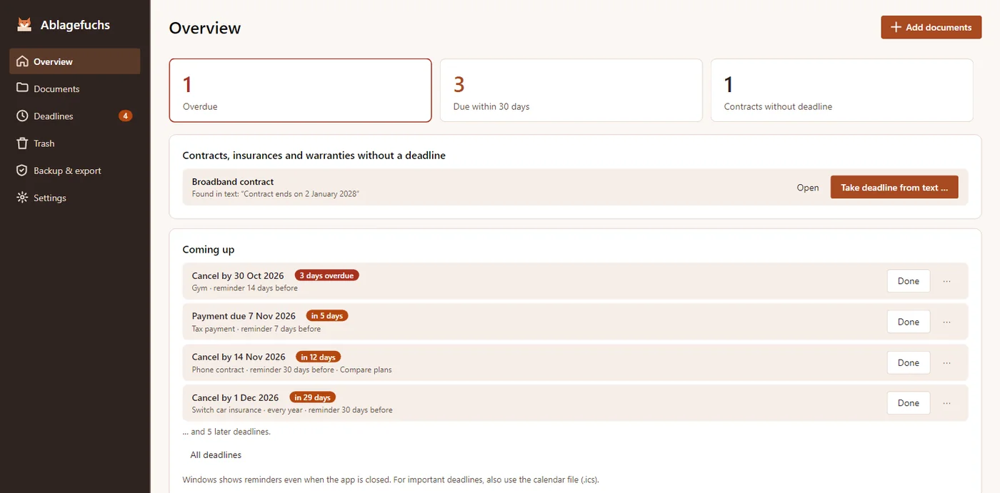
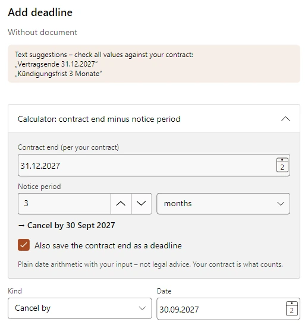
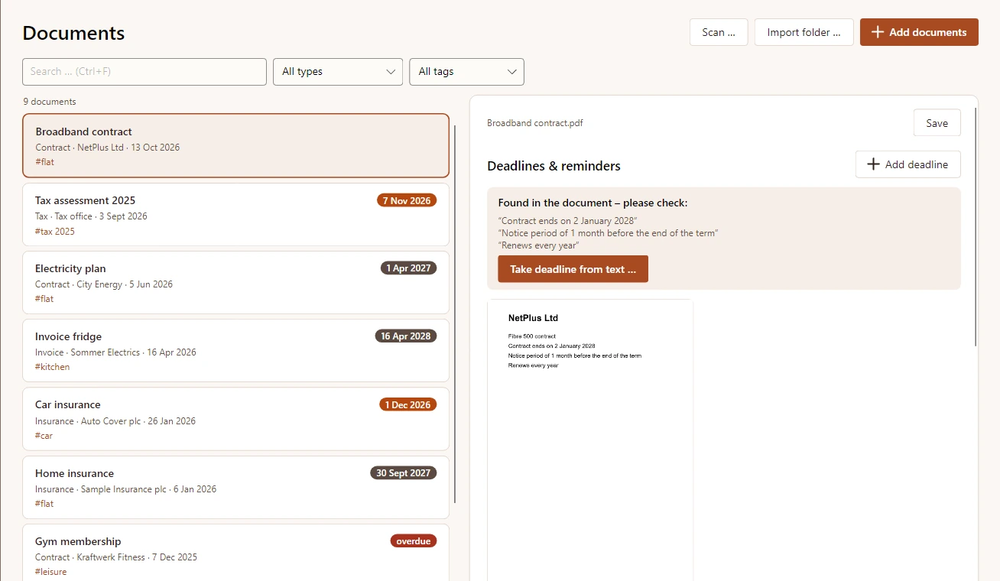
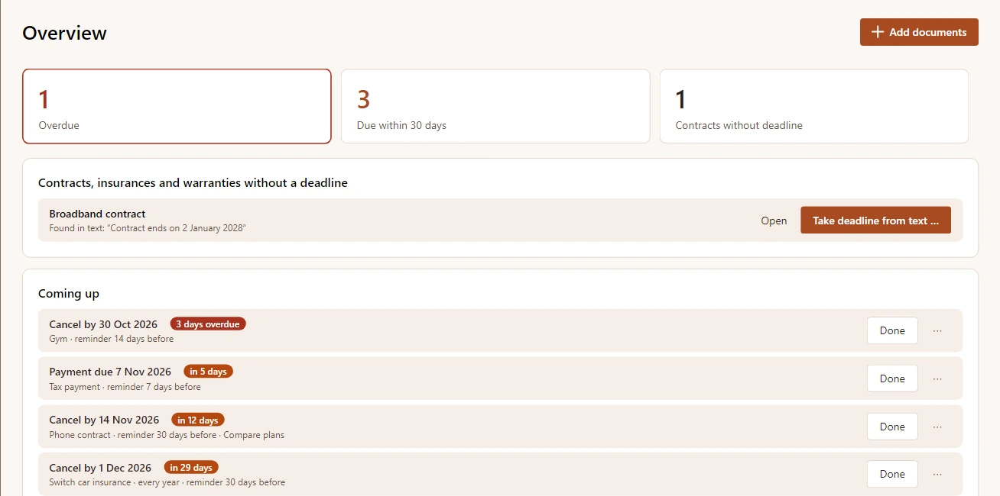
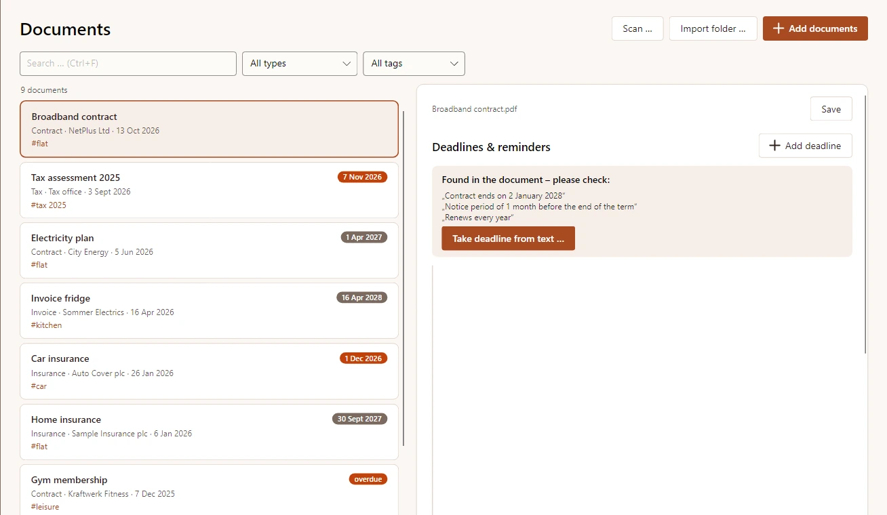
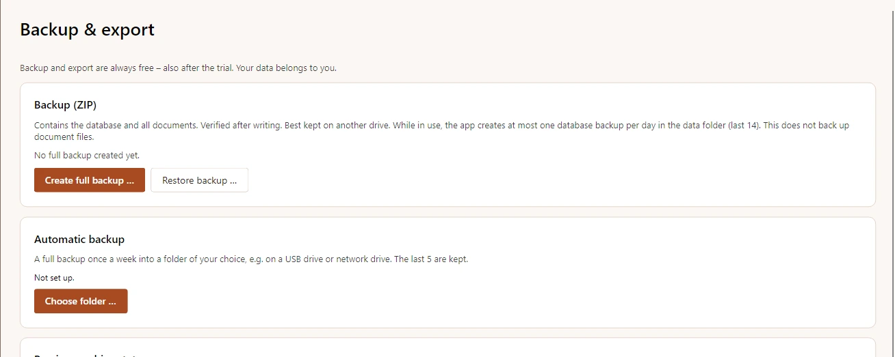
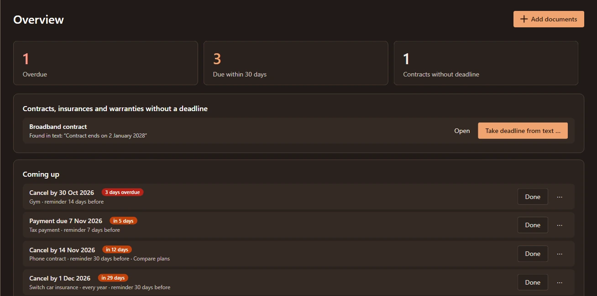

Riconoscimento offline
L’OCR di Windows rende ricercabili scansioni e foto. Tesseract, se installato, è usato come alternativa.
Archivio di contratti e scadenze per Windows
Contratti, fatture e lettere importanti sul tuo PC. Archivia copie, riconosci il testo offline e tieni sotto controllo le scadenze. Senza account né cloud.
Presto nel Microsoft StoreCome funziona

Aggiungi PDF, scansioni e foto o un’intera cartella. Ablagefuchs verifica la copia e rileva i duplicati.
Riconosci il testo offline, controlla tipo, data e mittente suggeriti e aggiungi etichette. Decidi tu cosa salvare.
Cerca per inizio di parola o senza accenti. Inserisci le scadenze e scegli l’anticipo per le notifiche Windows.
L’OCR di Windows rende ricercabili scansioni e foto. Tesseract, se installato, è usato come alternativa.
Cerca in titoli, mittenti, etichette e testo riconosciuto, anche per inizio di parola o senza accenti.
Disdette, fine contratto, garanzie, pagamenti e scadenze: vedi gli arretrati e i prossimi 30 giorni.
Fine contratto meno preavviso dà la data entro cui disdire. Inserisci tu i dati del contratto.
Scadenze singole o ricorrenti con anticipo a scelta. Esporta anche file ICS nel tuo calendario.
Tipi, etichette e cestino aiutano a organizzare. I file identici non vengono archiviati due volte.
Niente cloud, account, pubblicità o tracciamento. I documenti sono normali file sul tuo disco.
Ablagefuchs usa copie verificate. I file originali non vengono modificati, spostati o eliminati.
Contiene database e tutti i documenti. Verificato dopo la scrittura. Conservalo su un’altra unità. Durante l’uso, l’app crea al massimo una copia del database al giorno nella cartella dati (le ultime 14). I documenti non vengono copiati.
Dall’importazione al backup: verifica il testo, calcola la data di disdetta e segui la scadenza confermata.
Immagini di bozza da Avalonia Headless su macOS. Mancano ancora acquisizioni native Windows e un’anteprima PDF visibile.






Una tantum 24,99 € nel Microsoft Store, senza abbonamento.
Backup ed esportazione fanno parte dell’app; i tuoi dati restano tuoi.
Presto nel Microsoft Store
Una tantum 24,99 € nel Microsoft Store, senza abbonamento. Backup ed esportazione fanno parte dell’app; i tuoi dati restano tuoi.
Sì. Ablagefuchs archivia una copia verificata e lascia l’originale intatto nella sua posizione.
In locale sul PC in %LOCALAPPDATA%\MinhStudios\Ablagefuchs. Le copie sono normali file sul tuo disco, senza sincronizzazione cloud.
In locale con l’OCR di Windows e i pacchetti lingua installati. Tesseract installato può essere usato come alternativa.
Windows può mostrare promemoria pianificati anche con l’app chiusa. Attiva le notifiche Windows. Si pianificano fino a 200 avvisi entro 400 giorni; riapri regolarmente l’app per aggiornare la pianificazione. Le date provengono dai tuoi dati: controllale.
No. Memorizza i dati inseriti e li usa per il calcolo. Non verifica termini legali, clausole o obblighi di conservazione e non offre consulenza legale o fiscale.